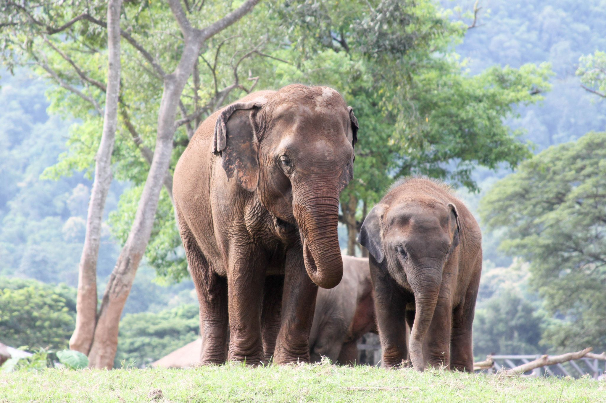

Top 5 places to visit in Kasargod
Bekal Fort
Kasaragod boasts of the largest and best preserved Fort in the whole of Kerala, bordered by a magnificent beach. Shaped like a giant keyhole, the historic Bekal Fort was built in the 17th century. This historic monument offers a superb view of the Arabian Sea from its tall observation towers, which were occupied by gigantic cannons till afew centuries ago.
Near the Fort is an old Mosque that is said to have been built by Tipu Sultan of Mysore. Originally constructed by the rulers of the ancient Kadampa Dynasty, the Fort changed hands over the years to the Kolathiri Rajas, the Vijayanagara Empire, Tipu Sultan and finally, the British East India Company.
Today, the Bekal Fort and its scenic surroundings are fast becoming an international tourist destination and a favourite shooting locale for film makers.

Ranipuram Hills
anipuram is a renowned tourist destination in the northern tip of Kerala. Located in Kasaragod, it is situated 750 m above sea level. It makes for a perfect picnic spot where one can even come across the occasional herd of elephants. Once known as Madathumala, it borders Karnataka and boasts of some of the best trekking trails in the area. Regular buses are available on this route and jeep rides are another favourite among all our visitors. The versatile vegetation that includes evergreen shola woods, monsoon forests and grasslands make it a good place to relax and take some time off from the rigors of daily life.

Anantapura Lake Temple
In the northern tip of Kerala lies the Ananthapura Lake Temple, the only lake temple in Kerala. The rectangular lake, supplied with regular spring water, hosts this magnificent temple. It is considered the moolasthanam (original abode) of Lord Ananthapadmanabha, the deity of the famous Sree Padmanabhaswamy Temple in Thiruvananthapuram. This 9th-century temple situated 30 km from Bekal in Kasaragod district. The view of the hillocks from the temple is extremely famous. Babia, the vegetarian crocodile and temple guardian, is popular among all the visitors. The drive to the temple in itself is extremely peaceful and calming.

Parappa Wildlife Sanctuary
A paradise for nature lovers and a fine ranked in the list of tourist places in Kasaragod. It is a natural habitat of some underrated fauna like a slow turtle, the prickly porcupine, Malabar hornbill, Slender loris, and the cute wild jungle cat.
If wilderness attracts you, this locale is a must visit for some great wildlife photography. Hike around the sanctuary and click around some rare species

Padanna Backwaters
The long shores and starry skies of Padanna Backwaters have attracted odes from awestruck visitors who stumble across this secluded hamlet. Padanna is among Northern Kerala's finest backwater locations. This tranquil destination is renowned because Padanna works hardest to give you time away from urban life. Tourists here are guided to the famous Oyster Opera, run by the visionary Gul Mohammad. This establishment works on the principle of self-help and people of the area are the most involved in its functioning.
Tourists can avail a delightful cruise on a houseboat or country boat, based on their preference. Crisscrossing canals and rows of coconut trees surround you as a lazy breeze accompanies you the entire time. The facilities here are taken care of completely by local producers and hence, you get a distinct Northern Kerala flavour in everything you indulge in. Five rivers feed these backwaters along with tiny islands that dot its brackish waters. You can even ask locals for tips on how to go about fishing as a leisure pursuit. The constant relaxed state that everyone around you is in is contagious. The nearby Bekal Fort is always a good place to stop by along with a famous manmade forest, Kareem Forest. One can also view the famous Theyyam performances, a staple of Northern Kerala, in the area.